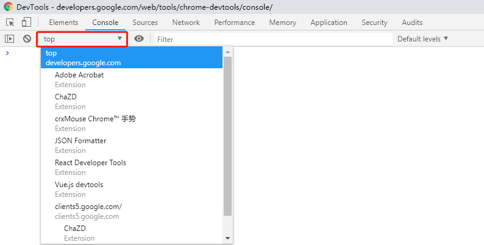

console
主要功能：
- 查看页面输出，可以定位到相应输出命令代码行
- 运行JavaScript，可以与页面相关或不相关，注意执行环境选择
展现形式
- 全屏模式：选择console栏
- 底部导航栏模式：在其他tab下按ESC
处理控制台输出
消息展示
消息堆叠
控制台中相同的消息会默认堆叠，并在消息旁显示重复次数
可以在
setting -> console中选择show timestamps，显示每条消息时还会显示其时间戳，由于时间戳不同，不会出现消息堆叠filter过滤
可以使用字符串或正则过滤控制台消息
<text>：仅展示包含该字符串的信息，或者文件名中包含该字符串-<text>：隐藏可以和<text>匹配的信息正则表达式：仅展示和正则表达式匹配的信息
也可以在其右侧的level中勾选想要展示的内容
- verbose：详细，不勾选会过滤debug信息
- Info
- Warning
- Error
清空历史记录
- 控制台右键
Clear console - 控制台调用
clear()函数 - JavaScript代码中调用
console.clear() Ctrl + L
保留历史记录
console的设置项中preserve log可以跨页面保留log输出，在页面刷新或更改时不会清空控制台
运行JavaScript
选择执行环境
如图示下拉框为Execution Context Selector，可以选择控制台的执行环境，在页面中存在iframe时会有很大作用

此选项默认为top，即为页面的顶部框架。其他的框架和扩展程序在其自身环境中运行，执行环境可以通过下拉菜单进行切换。当在top外的环境进行操作时，选择框会突出显示为红色
当选中其他框架的元素时，devtools会将该选项设为对应的环境
console命令
console语句
console.clear()：清空控制台console.log()：基本记录console.group()&console.groupEnd()：分组输出，可以嵌套console.group()中可以携带参数，作为该组的titleconsole.group()可以替换为console.groupCollapsed()，会自动折叠该分组信息console.warn()：警告，有堆栈信息console.error()：报错，有堆栈信息console.assert()：断言，在第一个参数为false时，输出第二个参数，同时包含堆栈信息console.table(arr1, arr2): 将arr1中的对象以表格形式展示出来，arr2可选，内容为希望展示的keyconsole.time(str)&console.timeEnd(str)：计时器，同一个计时开始与结束传入的字符串要相同console.timeStamp(str)：在performance的时间轴上标记一条黄色垂直线，并在event log中添加相应记录console.count(str)：输出str参数以及使用此参数调用该函数的次数，系统会自动为str进行计数console.trace()：打印当前的堆栈信息 tips：window.onError参数：错误信息，错误页面网址，出错行号
具体见教程
字符串替代与样式控制
字符串替代：console函数中第一个参数可能包含一个或多个格式说明符，格式说明符由一个
%符号与后面紧跟的一个字母组成，字母指示应用到值的格式。字符串后面的参数会按顺序替换占位符，达到字符串替换的效果console.log("Node count: %d, and the time is %f.", document.childNodes.length, Date.now());样式控制：console语句的第二个参数可以用于设置样式
console.log("%cThis will be formatted with large, blue text", "color: blue; font-size: x-large");
命令行函数
在控制台中可以使用与jQuery类似的元素选择器语法，但是其内部实现与jquery无关，可以避免使用document.querySelector()等过长的命令
$0-4：返回最后选中的五个元素，$0是最后访问的元素$()：返回与指定 CSS 选择器匹配的第一个元素$$()：返回一个与指定 CSS 选择器匹配的所有元素数组$x()：返回一个与指定 XPath 匹配的元素数组$x('html/body/p')$_：返回上一个表达式的输出，不一定是元素，也可以是JavaScript表达式结果copy(object)：将指定对象的字符串表示形式复制到粘贴板getEventListeners(object)：返回在指定对象上注册的事件侦听器monitor(function)：调用指定函数，系统会向控制台记录一条消息，其中指明函数名称及在调用时传递到该函数的参数，停止监听使用unmonitormonitorEvents(object[, events])：监听指定对象上发生的事件，可以监听单独事件、事件数组或事件类型，详见教程，停止监控使用monitorEvents，可以直接停止监控所有事件，亦可以停止监控某一个事件
具体见教程